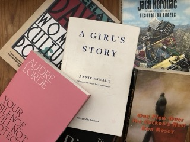
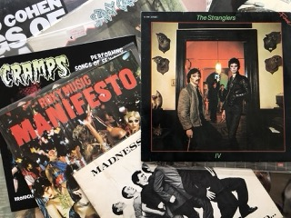

- Gwenaelle Pons-Gall
- Home
- Experience
- Interests
My main focus in literature is American, English and French literature from the 20th century, also I interest myself a lot with feminism essays lately.
Music is part of my life every single day so I really enjoy discovering new genres and bands regularly, especially relating the genres of punk, post-punk, and new wave. I go to as many concert I possibly can to see the artist still playing from those genres. I collect records, and thus spend a lot of time in my favorite record shops.
